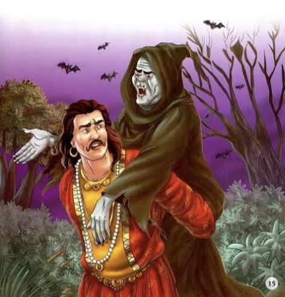
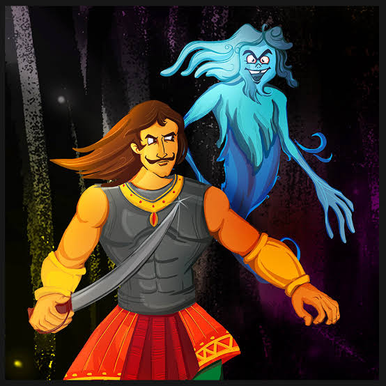

17.દગડુના સપના |
વર્ષો પહેલા ચંદનપુર નામના ગામમાં દગડુ નામનો છોકરો રહેતો હતો. તે ખૂબ જ આળસુ અને નિષ્ક્રિય હતો. દગડુની આળસ અને રાત-દિવસ સૂવાની ટેવથી તેની વૃદ્ધ માતા પરેશાન હતી. કોઈક રીતે તે દરજીનું કામ કરીને તેના પરિવારનું સંચાલન કરે છે, પરંતુ દગડુ પર તેની કોઈ અસર થતી નથી. તે દિવસ-રાત ઊંઘતો અને સપના જોતો હતો, પરંતુ સૌથી અનોખી વાત એ હતી કે જ્યારે પણ તે કોઈ અપ્રિય કે ખરાબ ઘટનાને લગતું કોઈ સપનું જોતો તો થોડા કલાકો પછી તે સપનું સાકાર થઈ જતું.
|  |
એક દિવસ દગડુ હંમેશની જેમ સૂતો હતો, અચાનક તેને સપનું આવ્યું કે એક છોકરીના લગ્નમાં લૂંટારાઓ આવ્યા છે અને બધો સામાન લૂંટી ગયા છે. સવાર પડતાં જ, આળસુ છોકરાએ તે છોકરીને તેના ઘરમાં તેના સ્વપ્નમાં જોઈ હતી. યુવતી દરજી પાસે તેના લગ્નનો ડ્રેસ લેવા આવી હતી. છોકરીને જોઈને દગડુ તરત જ તેને તેના સપના વિશે જણાવે છે. છોકરી નારાજ થઈને ઘરે જાય છે અને તેના પરિવારને આખી વાત કહે છે. દરેક જણ સ્વપ્ન સાંભળે છે પરંતુ તે માનતા નથી અને થોડા કલાકો પછી લૂંટારાઓ લગ્નના ઘર અને લગ્નની સરઘસમાં લૂંટ ચલાવીને નીકળી જાય છે. આ ઘટનાથી ગુસ્સે થઈને લોકોએ દગડુને માર માર્યો અને તેના પર લૂંટારાઓ સાથે લીગ હોવાનો આરોપ લગાવ્યો.
આ પછી દગડુને થોડા દિવસો પછી બીજું સપનું આવે છે. આ વખતે દગડુ તેના પાડોશી ચૌધરીનના નવા ઘરમાં આગનું સપનું જુએ છે. જ્યારે આળસુ છોકરો બપોરે ઘરની બહાર આવે છે, ત્યારે તે મીઠાઈઓ વહેંચતો અને નવા ઘરની ઉજવણી કરવા માટે ચૌધરાઇન વિસ્તારમાં હાઉસવોર્મિંગ સમારોહમાં લોકોને આમંત્રણ આપતો જોવા મળે છે. તે સ્ત્રીને જોતાની સાથે જ દગડુ તેની પાસે દોડી જાય છે અને તેને તેના સ્વપ્ન વિશે બધું કહે છે. સ્ત્રી દગડુ પર ગુસ્સે થાય છે અને ત્યાંથી નીકળી જાય છે, પરંતુ સમારંભ પહેલા ઘરને આગથી બચાવવા માટે સંપૂર્ણ વ્યવસ્થા કરે છે, પરંતુ તેમ છતાં દગડુનું સ્વપ્ન સાકાર થાય છે અને ચૌધરીનનું ઘર બળીને રાખ થઈ જાય છે.
આ વર્ષો સુધી ચાલે છે. દરેક વખતે ખરાબ સપનું જોઈને દગડુ લોકોને ચેતવવા આવતો, પણ અંતે તેને લોકોના ગુસ્સાનો ભોગ બનવું પડતું. આનાથી કંટાળીને દગડુએ ગામ છોડવાનું નક્કી કર્યું. તે ગામથી દૂર બીજા રાજ્યમાં જાય છે. અહીં દગડુ પોતાનું ભરણપોષણ કરવા માટે નોકરી શોધવાનું શરૂ કરે છે. સદભાગ્યે, તેને રાજાના ઘરે ચોકીદારની નોકરી મળે છે.
 દગડુને નોકરી મળ્યાના થોડા દિવસો પછી, રાજાને સોનપુર ગામ જવા રવાના થાય છે. સોનપુર જવાની આગલી રાતે દગડુએ સપનું જોયું કે સોનપુર ગામમાં ભયંકર ભૂકંપ આવ્યો અને ત્યાં કોઈ જીવતું નથી. સવારમાં રાજાનો રથ સોનપુર જવા નીકળે છે કે તરત જ દગડુ ઝડપથી રાજાના રથ પાસે પહોંચે છે અને તેને તેના સ્વપ્ન વિશે કહે છે અને તેને સોનપુર જતા અટકાવે છે. બીજે જ દિવસે રાજાને સમાચાર મળે છે કે તે ગામમાં ધરતીકંપ પછી કોઈ જીવતું નથી, આખું ગામ સ્મશાન બની ગયું છે.
સમાચાર મળતાં જ રાજા ચોકીદારને પોતાના દરબારમાં બોલાવે છે. તેને સોનપુરમાં ભૂકંપથી બચાવવા માટે, તે દગડુને મોંઘા દાગીના આપે છે અને તેને નોકરીમાંથી કાઢી મૂકે છે. આવી વાર્તા કહીને બેતાલ ચૂપ થઈ જાય છે. થોડી વાર વાત કર્યા પછી, તે રાજા વિક્રમને પૂછે છે મને કહો, 'દગડુને ભેટ આપ્યા પછી તેને નોકરીમાંથી કેમ કાઢી મૂકવામાં આવ્યો?' પ્રશ્ન સાંભળીને, રાજા વિક્રમાદિત્ય જવાબ આપે છે કે તેને રાજાનો જીવ બચાવવા અને રક્ષકની ફરજ બજાવવા માટે આ જ્વેલરી આપવામાં આવી હતી. આસપાસ ઊંઘવા બદલ તેને નોકરીમાંથી કાઢી મૂકવામાં આવ્યો હતો.
તેના પ્રશ્નનો જવાબ મળતાં જ બેતાલ ફરી ગાઢ જંગલમાં ઉડી જાય છે અને ઝાડ પર બેસી જાય છે અને વિક્રમાદડિયા ફરીથી તેની શોધમાં નીકળે છે.